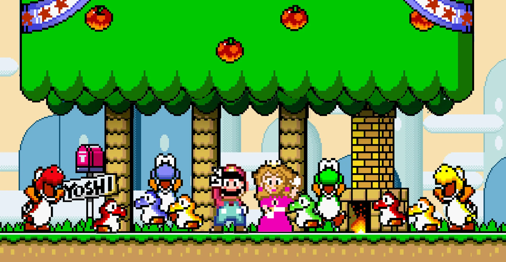

TOP 10 JOGOS RETRÔ
Tetris
Resident Evil 4
Street Fighter II
Pac-Man
Super Mario World
Team Fortress 2
Super Mario 64
Tibia
Final Fantasy VII
Ragnarok Online
Super Mario World

Super Mario World (スーパーマリオワールド Sūpā Mario Wārudo?),
originalmente chamado no Japão de Super Mario Bros. 4
(スーパーマリオブラザーズ4 Sūpā Mario Burazāzu fō?), é um jogo
eletrônico de plataforma desenvolvido pela Nintendo Entertainment
Analysis & Development e publicado pela Nintendo, em 1990, para o
console Super Nintendo Entertainment System (SNES). A história segue a
jornada de Mario para salvar a Princesa Toadstool e a Dinosaur Land do
antagonista Bowser e de seus capangas, os Koopalings. A jogabilidade é
semelhante à dos jogos anteriores da série Super Mario: os jogadores
controlam Mario ou seu irmão Luigi através de uma série de fases, cujo
objetivo é alcançar um portão gigante em seu final. Super Mario World
introduz Yoshi, um dinossauro que pode comer inimigos, bem como ganhar
habilidades comendo cascas de Koopa Troopas.
O desenvolvimento de Super Mario World foi liderado pelo diretor
Takashi Tezuka e pelo produtor e criador da série, Shigeru Miyamoto. É
o primeiro jogo da franquia Mario desenvolvido especificamente para o
SNES, e foi idealizado para aproveitar ao máximo as características
técnicas do console. A equipe de desenvolvimento teve mais liberdade,
em comparação com as versões da série para o Nintendo Entertainment
System (NES). Yoshi foi concebido desde o primeiro Super Mario Bros.,
mas não foi usado até o lançamento de Super Mario World devido à
limitações do NES. A trilha sonora do jogo foi composta por Koji
Kondo, que trabalhou em melodias semelhantes, porém mais variadas,
para diferenciá-lo de seus antecessores.
Super Mario World é frequentemente considerado um dos melhores jogos
da série Mario, e citado como um dos melhores jogos eletrônicos já
feitos. É o jogo mais vendido do SNES e um dos jogos mais vendidos de
todos os tempos, com mais de vinte milhões de unidades comercializadas
em todo o mundo. Seu sucesso levou a uma série de televisão animada
com o mesmo nome e uma prequela, Yoshi's Island, lançada inicialmente
em agosto de 1995. Foi relançado em várias ocasiões: fez parte da
compilação de 1994 Super Mario All-Stars + Super Mario World para o
SNES; foi relançado para o Game Boy Advance sob o título Super Mario
World: Super Mario Advance 2 em 2001, no Virtual Console para os
consoles Wii, Wii U e New Nintendo 3DS entre os anos de 2006 e 2016, e
no catálogo do Super NES Classic Edition em 2017. Desde 2019, o jogo
está disponível no Nintendo Switch através do serviço Nintendo Switch
Online.